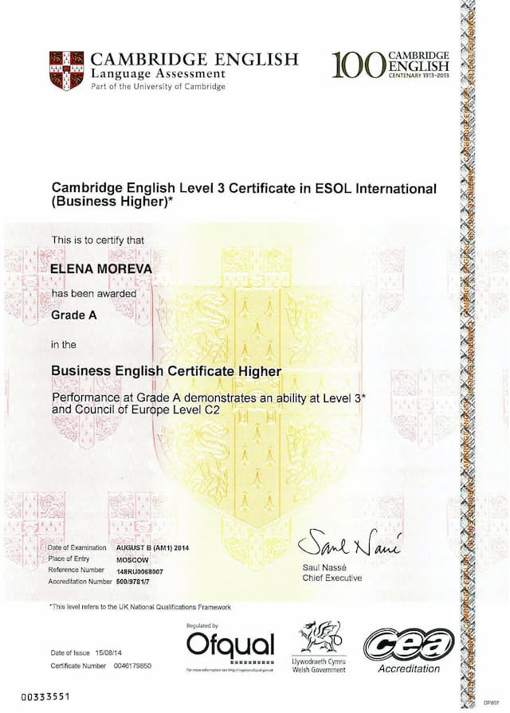

<section class="about-section" id="about">
	<div class="container">
		<h2>Преподаватель</h2>
		<div class="about-section-content">
			<picture>
				<source srcset="./images/about/teacher-desktop.jpg 1x, ./images/about/teacher-desktop@2x.jpg 2x"
					media="(min-width: 1366px)" />
				<source srcset="./images/about/teacher-tablet.jpg 1x, ./images/about/teacher-tablet@2x.jpg 2x"
					media="(min-width: 768px)" />
				<source srcset="./images/about/teacher-mobile.jpg 1x, ./images/about/teacher-mobile@2x.jpg 2x"
					media="(min-width: 320px)" />
				
			</picture>
			<div class="about-section-description">
				<h3>Елена Морева</h3>
				<ul>
					<li>Опыт подготовки учеников к ВНО - 6 лет</li>
					<li>Собственный результат сдачи ВНО - 197 баллов 2 года подряд</li>
					<li>Сдала на отлично международный аналог ВНО - Кембриджский PET (Preliminary English Test)</li>
				</ul>
				<p>Высшее образование получила в Институте международных отношений НАУ по специальности
					переводчик-аналитик.</p>
				<p>В свободное время проходит курсы от лучших университетов мира по эффективному преподаванию и
					методикам написания
					сочинений.</p>
				<p>В числе пройденных: English Grammar and Essay Writing (Berkeley), English Grammar&Style (The
					University of Queesland),
					How to Write an Essay (Berkeley), Academic and Business Writing (Berkeley), The Art of Teaching
					(GEMS education),
					Powerful Tools for Teaching and Learning (University of Houston).</p>
				<a href="#" id="certificate-btn">Cambrige English Entry Level Certificate</a>
			</div>
		</div>
	</div>

	<!-- CERTIFICATE MODAL -->
	<!-- <div class="modal modal-area-bgd" id="certificate-modal">
		<div class="container certificate-container modal-area-content">
			<button type="button" class="modal-close-btn certificate-close-btn">
				<svg width="15" height="15">
					<use href="./images/sprite.svg#close"></use>
				</svg>
			</button>
			<div class="scroll">
				<picture>
					<source srcset=".. /images/about/certificate.jpg 1x, ../images/about/certificate@2x.jpg 2x">
					
				</picture>
				<h3>Международный языковой сертификат Cambrige ESOL</h3>
				<p>Экзаменационный департамент Кембриджского Университета, который называется Cambridge ESOL (English
					for
					Speakers of Other
					Languages) является старейшей и наиболее авторитетной организацией, занимающейся экзаменами по
					английскому языку.</p>
				<p>Кембриджские экзамены проверяют уровень развития всех четырех языковых навыков (чтение, письмо,
					аудирование/понимание на
					слух и говорение) и разработаны с учетом Общеевропейской шкалы языковой компетенции (Common European
					Framework of
					Reference for Languages, CEFR) – международной системы определения уровня владения языком.</p>
			</div>
		</div>
	</div> -->
	<!-- / CERTIFICATE MODAL -->
</section>

